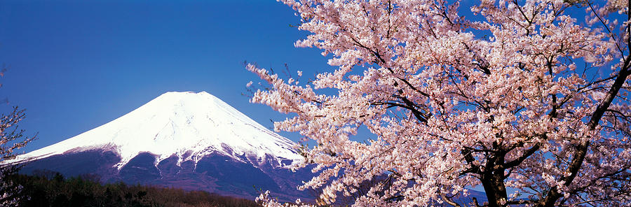

Japan
Known as the ‘Land of the Rising Sun’, Japan is an eclectic mix of past, present,
and future, combining ancient samurai traditions and an impressive history with a modern-day persona
and new world technology. The country is unique in that, until the late 19th century, it was ruled by
the feudal Shogunate, with its semi-divine Emperor, a powerless figurehead trapped in the Imperial Palace in the ancient city of Kyoto.